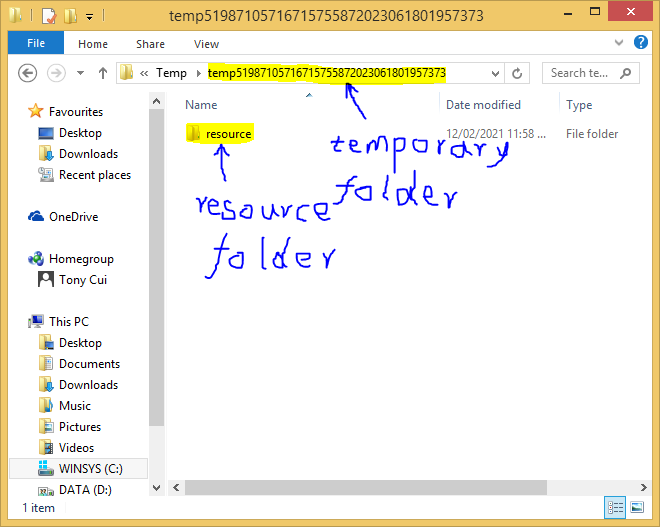
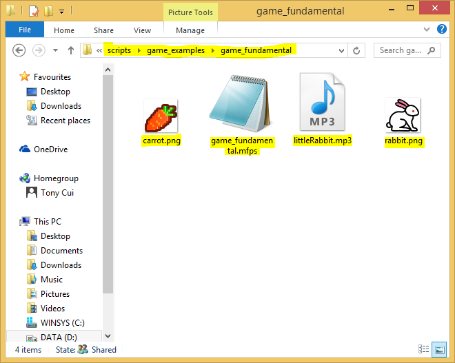
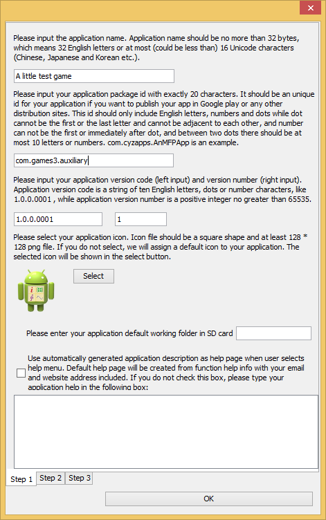
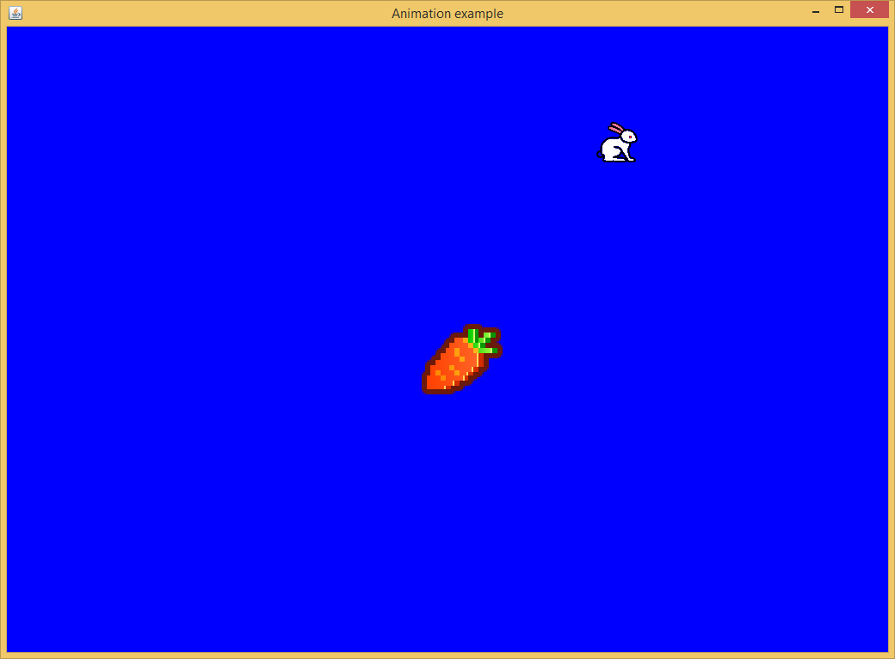
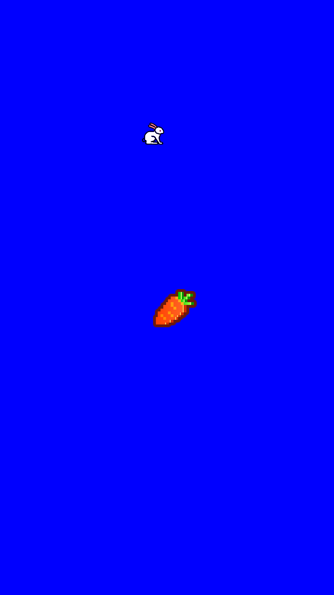

MFP game, in essence, is a command line program. It has a entry point, which is a function call. The function starts main window of the game by calling open_screen_display function. This window will appear on top of command line box. Developer can set its head, background color, size (only on JVM, in Android it always covers the whole screen) and orientation in Android. It will show the animation and accept user's mouse (or finger if in Android) inputs. If developer wants to read details of its use, simple type help open_screen_display in a command line box.
open_screen_display function returns a window handle. This handle is the starting point of any visual calculation, e.g. it can be used to return features of the window, e.g. window size by calling get_display_size, it can be used to calculate position of text by calling calculate_text_origin, it accepts painting events triggered by painting functions, e.g. draw_text and draw_oval, and it can be used to pull GUI events, like mouse movements, by calling pull_event function.
Updating main window means redrawing the whole or part of the image on the window. Clearly, if the game needs very sophistcated animation, bordering the image part to redraw will be an impossible mission. Redrawing the whole image is the only option. However, directly write the screen is notoriously slow. To minimize direct screen writing, MFP buffers a mirror of the screen in memory, and draw/redraw the elements on the buffered mirror. After the whole frame is drawn, MFP then posts the mirror to the screen. This means one frame only needs to write screen once.
The above approach only avoids multiple screen writing activities in one frame. But redrawing the buffered image is still not easy. For example, How to redraw the image if there are two partially overlapped circles in the image, in the next frame one circle will move but the other circle will not move while the static circle is above the moving circle?
MFP's solution is using a painting event for each to-be-drawn element, e.g. a line, an oval or an image. A painting event has an owner. This owner tells painting event scheduler who owns this painting event. The owner can be a string (i.e. owner name), or an integer (i.e. owner id), or NULL (meaning that system owns it), or a two element array with its first element is either string based owner name, or integer based owner id, or NULL, and its second element is a double value representing a pseudo timestamp. Note that pseudo timestamp is not a real timestamp. It can be any double value. It will be used when developer tries to remove this event from painting event scheduler.
When developer calls a painting function, e.g. draw_line, draw_text or draw_rect, painting event owner should be passed in as the first parameter of the function. The function doesn't do any painting work. Instead, it hooks its painting event into main window's painting event queue. After all the painting functions are called for this frame, developer should call update_display function. This function draws all the elements in the painting event queue into the buffered image in a first-in-first-service order, and then posts the buffered image to the main window.
The size of painting event queue is unlimited. If no painting event is dropped from the queue, the queue will includes all the events not only for this frame but also for previous frames. The trick of animation is a function called drop_old_painting_requests. This function drops selected painting event from the painting event queue. This function has two parameters. The first one is owner info and the second one is main window handle. The criteria is, if a painting event's owner is the same as drop_old_painting_requests's owner info parameter and a painting event's owner's timestamp is older (i.e. smaller) than drop_old_painting_requests's owner info's timestamp, the painting event is dropped. Note that sometimes owner parameter doesn't include timestamp. In this case, it's timestamp is the system time when the painting function or the drop_old_painting_requests function is called.
So to draw an animation, after developer calls painting functions, drop_old_painting_requests function has to be called before update_display function call. In this way, only events for the new frame are painted on the main window. Developer may also play with the timestamp of owner parameter of drop_old_painting_requests function to achieve some effects, e.g. showing moving trail of game characters.
After finishing drawing one frame, don't forget to sleep a while before going to the next iteration. Otherwise, system resource will be exhausted.
The following code is an example to draw animation of two cycles in the main window, one is static while the other is rotating around it.
function rotate_around()
// open a screen display window for animation.
// 为动画打开一个显示窗口。
variable DISPLAYSURF = open_screen_display("Animation example", [255, 0, 0, 255], true, [1024, 728], true)
// we still need to get main window's size because if in Android, the window size set by open_screen_display
// has no effect. In this case main game window always take the whole screen.
// 我们还是需要获取游戏主窗口的尺寸。这是由于，如果是在安卓上运行，open_screen_display函数设置的窗口尺寸起不到任何作用，游戏
// 主窗口总是覆盖整个屏幕。
variable displaySize = get_display_size(DISPLAYSURF)
variable displayWith = displaySize[0], displayHeight = displaySize[1]
variable idxOfFrame = 0 //index of frame //帧的索引
// as circlel is static and it is not overlapped by other elements nor overlaps any other elements, draw_oval
// is only called once for it. This call will create a painting event for circle1 and this painting event will
// be executed by the update_display function each time it is called.
// 由于1号圆是不动的，并且它和别的图形没有重叠，所以只需要为它调用draw_oval函数一次。这个draw_oval函数调用将会生成一个绘图事件，
// 该绘图事件用于绘制1号圆，该绘图事件在每次update_display函数调用的时候都会被触发。
draw_oval("circle1", DISPLAYSURF, [displayWith / 2 - 32, displayHeight / 2 - 32], 64, 64, [255, 255, 0, 0], 0)
// circle1 has been in the centre of the screen, now make circle 2 rotate around circle 1
// 1号圆现在位于屏幕中央，我们让2号圆围着1号圆转
variable circle1To2Distance = 200
variable currentAngle = 0
while true
variable giEvent = pull_event(DISPLAYSURF)
if and(giEvent != Null, get_event_type_name(giEvent) == "GDI_CLOSE")
// quit // 游戏退出事件
break
endif
circle1To2Distance = 100 * (2 + sin(idxOfFrame * pi/180))
variable x2 = displayWith / 2 + circle1To2Distance * cos(currentAngle * pi/180)
variable y2 = displayHeight / 2 + circle1To2Distance * sin(currentAngle * pi/180)
variable angularVelocity = (1000000 / circle1To2Distance ** 3) * 5 // angular velocity in degree //角速度
currentAngle = currentAngle + angularVelocity
draw_oval(["circle2", idxOfFrame], DISPLAYSURF, [x2 - 24, y2 - 24], 48, 48, [255, 0, 255, 0], 0)
drop_old_painting_requests(["circle2", idxOfFrame], DISPLAYSURF)
update_display(DISPLAYSURF) // update game display window // 更新游戏显示窗口
// sleep a while to avoid exhausting computing resources. Note that in Android systems with weak CPU
// the sleeping interval should be shorter to give more time for game computing.
// 睡一会儿，避免占用所有的CPU资源，让别的进程得以有机会工作。注意有的安卓系统的CPU不是很强劲，睡眠的时间就需要更短一些
// 这样用于游戏计算的时间就可以更多一些。
sleep(100)
idxOfFrame = idxOfFrame + 1
loop
endf
The sample code in the above session demonstrates the route to draw animation in main game window. However, it doesn't involve any interaction between game window and player. If Developer wants to react to players input, the code has to enter player event processing mode after main window is started. This is an infinite loop until player quits the game. In each looping, pull_event function should be called to return an event from event queue or null if no event is available. Then the code will respond to the event by updating the main window if it is a mouse or finger event. Note that at this stage key board event is not supported. For details of pull_event function, simple type help pull_event in a command line box.
After a player event is pulled out by the pull_event function, developer needs to call get_event_type function to find out the type of the event. At this stage get_event_type function supports the following events: GDI_INITIALIZE (type is 1, when a screen display is created), GDI_CLOSE (type is 10, when a screen display is shutdown), WINDOW_RESIZED (JVM platform only, type is 21, when a screen display window is resized), POINTER_DOWN (type is 102, when a mouse button is pushed down in PC or user's finger is tapping down in Android), POINTER_UP (type is 103, when a mouse button bounces up in PC or user's finger is moving away from touchpad in Android), POINTER_CLICKED (type is 104, when a mouse button is clicked in PC or user's finger taps touchpad in Android), POINTER_DRAGGED (type is 105, when a mouse or user's finger is dragging. Different from POINTER_SLIDED event, this event is continously triggered during the dragging process), POINTER_SLIDED (type is 106, when a mouse is dragged to the destination and its button is released in PC, or when user's finger drags to the destination and starts to leave touchpad in Android. Different from POINTER_DRAGGED, this event is triggered once-off), POINTER_PINCHED (Android only, type is 201, when user pinches to zoom in Android)
Developer has to compare event type to an integer value representing the type. For instance,
get_event_type(giEvent) == 106
identifies if the type of a player event is 106, i.e. POINTER_SLIDED. Clearly, this is not an intruitive way. So it is recommended to use get_event_type_name function, which returns a string matches the event name. In the above example, we can use
get_event_type_name(giEvent) == "POINTER_SLIDED"
to identify if a player event is POINTER_SLIDED.
A player event may also fetch extra information, i.e. properties of the event, to the source code besides its type. The extra information is stored in a dictionary-like structure and can be extracted by calling get_event_info function. This function has two parameters, first is the event and second is the key of the the extra information. Different event type has different extra information. For example, POINTER_SLIDED has five keys which are "button", "x", "y", "last_x" and "last_y". Developer may type help get_event_info to find out what are the keys for each event type.
The following code is an example to show how to handle user mouse or finger input by moving a circle following the pointer, i.e. mouse on JVM or finger in Android. It only processes POINTER_SLIDED event. But other events should be similar.
function slide_pointer()
// open a screen display window for animation.
// 为动画打开一个显示窗口。
variable DISPLAYSURF = open_screen_display("Animation example", [255, 0, 0, 255], true, [1024, 728], true)
// we still need to get main window's size because if in Android, the window size set by open_screen_display
// has no effect. In this case main game window always take the whole screen.
// 我们还是需要获取游戏主窗口的尺寸。这是由于，如果是在安卓上运行，open_screen_display函数设置的窗口尺寸起不到任何作用，游戏
// 主窗口总是覆盖整个屏幕。
variable displaySize = get_display_size(DISPLAYSURF)
variable displayWith = displaySize[0], displayHeight = displaySize[1]
variable idxOfFrame = 0 //index of frame //帧的索引
variable circle1Left = displayWith / 2 - 32, circle1Top = displayHeight / 2 - 32
variable circle2Left = displayWith / 2 + 172, circle2Top = displayHeight / 2 - 255
draw_oval(["circle2", idxOfFrame], DISPLAYSURF, [circle2Left, circle2Top], 48, 48, [255, 0, 255, 0], 0)
draw_oval(["circle1", idxOfFrame], DISPLAYSURF, [circle1Left, circle1Top], 64, 64, [255, 255, 0, 0], 0)
while true
variable deltaX = 0, deltaY = 0
variable giEvent = pull_event(DISPLAYSURF)
if and(giEvent != Null, get_event_type_name(giEvent) == "GDI_CLOSE")
// quit // 游戏退出事件
break
elseif and(giEvent != Null, get_event_type(giEvent) == 106) // mouse or finger slided // 鼠标或手指滑动事件
// x1 and y1 are the coordinate when sliding starts, x2 and y2 are the coordinate when sliding finishes
// x1和y1是滑动开始时的坐标位置，x2和y2是滑动结束时的坐标位置
variable x1 = get_event_info(giEvent, "last_x")
variable y1 = get_event_info(giEvent, "last_y")
variable x2 = get_event_info(giEvent, "x")
variable y2 = get_event_info(giEvent, "y")
deltaX = x2 - x1
deltaY = y2 - y1
//print_line("x1 = " + x1 + " y1 = " + y1 + " x2 = " + x2 + " y2 = " + y2 + " deltaX = " + deltaX + " deltaY = " + deltaY)
circle2Left = circle2Left + deltaX
circle2Top = circle2Top + deltaY
// draw circle 2 first, then circle 1, this ensures that circle 1 is in front of circle 2.
// 先画2号圆，再画1号圆，这样可以保证1号圆在2号圆的前面。
draw_oval(["circle2", idxOfFrame], DISPLAYSURF, [circle2Left, circle2Top], 48, 48, [255, 0, 255, 0], 0)
draw_oval(["circle1", idxOfFrame], DISPLAYSURF, [circle1Left, circle1Top], 64, 64, [255, 255, 0, 0], 0)
drop_old_painting_requests(["circle2", idxOfFrame], DISPLAYSURF)
drop_old_painting_requests(["circle1", idxOfFrame], DISPLAYSURF)
endif
update_display(DISPLAYSURF) // update game display window // 更新游戏显示窗口
// sleep a while to avoid exhausting computing resources. Note that in Android systems with weak CPU
// the sleeping interval should be shorter to give more time for game computing.
// 睡一会儿，避免占用所有的CPU资源，让别的进程得以有机会工作。注意有的安卓系统的CPU不是很强劲，睡眠的时间就需要更短一些
// 这样用于游戏计算的时间就可以更多一些。
sleep(30)
idxOfFrame = idxOfFrame + 1
loop
endf
A game usually includes many files other than source code, i.e. images and sounds. MFP has provided functions to load images, i.e. load_image and play sounds, i.e. play_sound. If play the game on JVM, developer only needs to tell these functions the path of the file. However, in Android, the situation is ramfied.
An MFP game may run in two different scenarios in Android. One is like on JVM, where auxiliary files are saved in Android device's ROM, which correpsonds to hard disk in a PC. In this case, code only needs path of the file. In the other scenario the MFP game has been compiled into an APK package. In this case auxiliary files are saved in an resource.zip package in asset folder of the APK package, as shown in the chart below. MFP needs an different set of functions to load data from zipped asset folder. In this case the corresponding functions are load_image_from_zip and play_sound_from_zip. To find out the use of these functions, simply type help followed by function name in an MFP command line box.

However, the complexity of an Android APK exists before run time. An Android APK is a compiled MFP script. MFP compiler has no idea what auxiliary files the script needs and where to place the files. Therefore developer needs to explicitly pass this information to MFP compiler. This is achieved by using MFP annotation @build_asset and function copy_to_resource. copy_to_resource is an MFP compiler function, which means it is not in mfp citingspace but in mfp_compiler citingspace. At the run-time, mfp_compiler citingspace is not in the default citingspace stack so that function copy_to_resource is invisible. However, when building APK, mfp_compiler citingspace is visible to annotations.
Function copy_to_resource has two parameters. First parameter is source path of game's auxiliary file or folder. Note that if the game is running as an MFP app, source path of auxiliary file is no longer a string because the file is actually zipped in APK's asset. In this case the source path of auxiliary file is a three element array, with first element being zip type, 1 for zipped asset in APK and 0 otherwise; second element is zipped resource, i.e. resource.zip, path and third element is zip entry path of the auxiliary file in the zipped resource file. Second parameter of function copy_to_resource is destination path of game's auxiliary file or folder. If the script is being built into an Android APK, destination path is the zip entry path in the resource.zip file in the APK package's asset. To see detailed use of @build_asset and copy_to_resource, simply type help @build_asset and help ::mfp_compiler::annotation::build_asset::copy_to_resource (copy_to_resource has to include its whole citingspace path because mfp_compiler citingspace is not in the default citingspace stack)in an MFP command line box.
@build_asset is also required when the game needs to run cross-device, e.g. two players using different devices to play one game. This basically likes building an APK. The code tells MFP compiler which auxiliary file or folder needs to be copied to remote and what the desination path is. Because MFP creates a temporary folder specifically for every remote session, or sandbox in the terminology of MFP, developer needs to call function get_sandbox_session_resource_path to get path of the resource folder in the temporary folder, then append relative desination path to it, as shown in the following chart. To see detailed use of function get_sandbox_session_resource_path, please simply type help get_sandbox_session_resource_path in an MFP command line box.
The following code snippet demonstrates how to properly copy an auxiliary file, i.e. food.png, to the destination location and how to load the auxiliary file at run time. Note that, as an annotation, the @build_asset statement is executed at compiling time, i.e. when we are building an APK from the MFP script or when the MFP script is sending source code(s) and auxiliary file(s) to a remote device. Also note that the @build_asset statement is very long so that it is broken into three lines using MFP's line breaker, i.e. space followed by an underscore character.
The @build_asset statement considers three cases using function iff whose details can be obtained by typing help iff in a command line. First is that compiling occurs in a remote session, or sandbox in the terminology of MFP. This can happen when the remote session launches another remote session so that it needs to transfer the auxiliary file to the new remote session. In this case function is_sandbox_session() returns true and the auxiliary file must be located in the resource sub-folder of a temporary directory whose path is returned by function get_sandbox_session_resource_path(). The second case is that compiling happens in an MFP app. This is the situation when the MFP app kicks off a remote session and prepares to transfer the auxiliary file. In this case function is_mfp_app() returns true. Also, as mentioned above, the source path in this case is not a string but a three element array. The array's first element is 1 which means the source auxiliary file is in an Android app's APK. The second element is a function call, i.e. get_asset_file_path("resource"), which returns the path of resource.zip file in Android app's asset. The last element is the zip entry of the source auxiliary file to the resource.zip in Android app's asset. The third case is that compiling occurs when the MFP script is running on JVM or in Android but as a standalone script (i.e. not as an Android app). Because in this example the auxiliary file is located in the same folder as the source script in this case, function get_src_file_path() is called to return source script full path, and then call function get_upper_level_path to obtain the path of the folder where the source script and the auxiliary file are both located.
@build_asset copy_to_resource(iff(is_sandbox_session(), get_sandbox_session_resource_path() + "images/food.png", _
is_mfp_app(), [1, get_asset_file_path("resource"), "images/food.png"], _
get_upper_level_path(get_src_file_path()) + "food.png"), "images/food.png")
if is_sandbox_session()
foodImage = load_image(get_sandbox_session_resource_path() + "images/food.png")
elseif is_mfp_app()
foodImage = load_image_from_zip(get_asset_file_path("resource"), "images/food.png", 1)
else
foodImage = load_image(get_upper_level_path(get_src_file_path()) + "food.png")
endif
The lines following the @build_asset statement are executed at run-time. Similiarly three cases are considered. The first case is running in a remote session, or called a sandbox by MFP. In this case the file food.png is located in a folder named images in the resource folder of a temporary directory. The resource folder's path is returned by function get_sandbox_session_resource_path(). The second case is running as an MFP app. In this case the auxiliary file, i.e. food.png, is located in resource.zip file in the app's asset. Function call get_asset_file_path("resource") returns the path of resource.zip file in Android app's asset. "images/food.png" is the zip entry of the source auxiliary file to the resource.zip in Android app's asset. The third case is that the game is running on JVM or in Android as a standalone script. In this example, the auxiliary file is located in the same folder as the source script in this case, function get_src_file_path() is called to return source script full path, and then call function get_upper_level_path to obtain the path of the folder where the source script and the auxiliary file are both located. Note that only in case 2, i.e. the game is running as an Android app, the auxiliary file is saved in a zip file as a zip entry. In the other two cases, the auxiliary file is a normal file in hard disk or ROM. So in case 2, function load_image_from_zip is called while in the other two cases function load_image is called to load the image. To get detailed use of the two functions, simply type help load_image_from_zip and help load_image in MFP command line.
The following code is an example to show how to include auxiliary files in the game. This game is basically the same as the above dragging and dropping circle example. However, instead of drawing two circles, this example draws a carrot and a white rabbit. Player can drag and drop the rabbit like the second circle in the previous example.
function game_with_auxiliaries()
// open a screen display window for animation.
// 为动画打开一个显示窗口。
variable DISPLAYSURF = open_screen_display("Animation example", [255, 0, 0, 255], true, [1024, 728], true)
// we still need to get main window's size because if in Android, the window size set by open_screen_display
// has no effect. In this case main game window always take the whole screen.
// 我们还是需要获取游戏主窗口的尺寸。这是由于，如果是在安卓上运行，open_screen_display函数设置的窗口尺寸起不到任何作用，游戏
// 主窗口总是覆盖整个屏幕。
variable displaySize = get_display_size(DISPLAYSURF)
variable displayWith = displaySize[0], displayHeight = displaySize[1]
variable carrotImage, rabbitImage, backgroundSnd
// now load a carrot image. It will be drawn in the main window.
// 现在装入一个胡萝卜的图像。该图像将会被绘制在游戏主窗口中。
@build_asset copy_to_resource(iff(is_sandbox_session(), get_sandbox_session_resource_path() + "images/carrot.png", _
is_mfp_app(), [1, get_asset_file_path("resource"), "images/carrot.png"], _
get_upper_level_path(get_src_file_path()) + "carrot.png"), "images/carrot.png")
if is_sandbox_session()
carrotImage = load_image(get_sandbox_session_resource_path() + "images/carrot.png")
elseif is_mfp_app()
carrotImage = load_image_from_zip(get_asset_file_path("resource"), "images/carrot.png", 1)
else
carrotImage = load_image(get_upper_level_path(get_src_file_path()) + "carrot.png")
endif
// now load a rabbit image. It will be drawn in the main window and will be moved by finger or mouse.
// 现在装入一个小白兔的图像。该图像将会被绘制在游戏主窗口中并且将会被手指或者鼠标拖动。
@build_asset copy_to_resource(iff(is_sandbox_session(), get_sandbox_session_resource_path() + "images/rabbit.png", _
is_mfp_app(), [1, get_asset_file_path("resource"), "images/rabbit.png"], _
get_upper_level_path(get_src_file_path()) + "rabbit.png"), "images/rabbit.png")
if is_sandbox_session()
rabbitImage = load_image(get_sandbox_session_resource_path() + "images/rabbit.png")
elseif is_mfp_app()
rabbitImage = load_image_from_zip(get_asset_file_path("resource"), "images/rabbit.png", 1)
else
rabbitImage = load_image(get_upper_level_path(get_src_file_path()) + "rabbit.png")
endif
// now play the background music. It will be repeated until player exits.
// 现在开始演奏音乐。注意会连续不断地演奏，直到退出游戏。
@build_asset copy_to_resource(iff(is_sandbox_session(), get_sandbox_session_resource_path() + "sounds/littleRabbit.mp3", _
is_mfp_app(), [1, get_asset_file_path("resource"), "sounds/littleRabbit.mp3"], _
get_upper_level_path(get_src_file_path()) + "littleRabbit.mp3"), "sounds/littleRabbit.mp3")
if is_sandbox_session()
backgroundSnd = play_sound(get_sandbox_session_resource_path() + "sounds/littleRabbit.mp3", true)
elseif is_mfp_app()
backgroundSnd = play_sound_from_zip(get_asset_file_path("resource"), "sounds/littleRabbit.mp3", 1, true)
else
backgroundSnd = play_sound(get_upper_level_path(get_src_file_path()) + "littleRabbit.mp3", true)
endif
variable idxOfFrame = 0 //index of frame //帧的索引
variable carrotLeft = displayWith / 2 - 32, carrotTop = displayHeight / 2 - 32
variable rabbitLeft = displayWith / 2 + 172, rabbitTop = displayHeight / 2 - 255
// set scaling ratio 1.0, 1.0 so that we do not scale rabbit image
// 将小白兔图像的缩放比例设置为1.0，1.0，保持原有尺寸。
draw_image(["rabbit", idxOfFrame], DISPLAYSURF, rabbitImage, rabbitLeft, rabbitTop, 1.0, 1.0)
// set scaling ratio 2.0, 2.0 so that we enlarge the carrot image
// 将胡萝卜图像的缩放比例设置为2.0，2.0，扩大原有尺寸。
draw_image(["carrot", idxOfFrame], DISPLAYSURF, carrotImage, carrotLeft, carrotTop, 2.0, 2.0)
while true
variable deltaX = 0, deltaY = 0
variable giEvent = pull_event(DISPLAYSURF)
if and(giEvent != Null, get_event_type_name(giEvent) == "GDI_CLOSE")
// quit. Don't forget to stop music to play // 游戏退出事件。不要忘了关掉声音。
stop_sound(backgroundSnd)
break
elseif and(giEvent != Null, get_event_type(giEvent) == 106) // mouse or finger slided // 鼠标或手指滑动事件
// x1 and y1 are the coordinate when sliding starts, x2 and y2 are the coordinate when sliding finishes
// x1和y1是滑动开始时的坐标位置，x2和y2是滑动结束时的坐标位置
variable x1 = get_event_info(giEvent, "last_x")
variable y1 = get_event_info(giEvent, "last_y")
variable x2 = get_event_info(giEvent, "x")
variable y2 = get_event_info(giEvent, "y")
deltaX = x2 - x1
deltaY = y2 - y1
//print_line("x1 = " + x1 + " y1 = " + y1 + " x2 = " + x2 + " y2 = " + y2 + " deltaX = " + deltaX + " deltaY = " + deltaY)
rabbitLeft = rabbitLeft + deltaX
rabbitTop = rabbitTop + deltaY
// draw rabbit first, then carrot, this ensures that carrot is in front of rabbit.
// 先画小白兔，再画胡萝卜，这样可以保证胡萝卜在小白兔的前面。
draw_image(["rabbit", idxOfFrame], DISPLAYSURF, rabbitImage, rabbitLeft, rabbitTop, 1.0, 1.0)
draw_image(["carrot", idxOfFrame], DISPLAYSURF, carrotImage, carrotLeft, carrotTop, 2.0, 2.0)
drop_old_painting_requests(["rabbit", idxOfFrame], DISPLAYSURF)
drop_old_painting_requests(["carrot", idxOfFrame], DISPLAYSURF)
endif
update_display(DISPLAYSURF) // update game display window // 更新游戏显示窗口
// sleep a while to avoid exhausting computing resources. Note that in Android systems with weak CPU
// the sleeping interval should be shorter to give more time for game computing.
// 睡一会儿，避免占用所有的CPU资源，让别的进程得以有机会工作。注意有的安卓系统的CPU不是很强劲，睡眠的时间就需要更短一些
// 这样用于游戏计算的时间就可以更多一些。
sleep(30)
idxOfFrame = idxOfFrame + 1
loop
endf
One thing needs to be kept in mind. Different from other examples, developer cannot simply copy and paste the above code in a command line box and then run it because it needs auxiliary files. Also, it calls function get_src_file_path() which returns null when being called by command line instead of coded in a source file. Click here to download zipped game examples package. Unzip it and copy the game_examples folder into the scripts folder next to the JMFPLang.jar file, as shown in the following chart.

The source function, i.e. game_with_auxiliaries is in the file game_fundamental.mfps in game_fundamental subfolder of game_examples folder. Its auxiliary files, i.e. carrot.png, rabbit.png and littleRabbit.mp3 are also located in the same folder, as shown in the following chart. To launch the example, simply start JMFPLang.jar file and in the command line and run game_fundamental::game_with_auxiliaries().
This example can also be compiled into an Android APK. Start JMFPLang.jar, select “Tools” menu and then “build MFP App” sub-menu. Following instructions from Step 1 to Step 3. Please note that in Step 2 the function name should be game_fundamental::game_with_auxiliaries, no bracket or close-bracket included. Also brief description of the function can be left as blank. In Step 3, if developer wants to publish the APK, either create a new key or use an existing key. Otherwise, simply select test key. After all input fields are filled properly, click OK button. The built APK is located in the apks folder next to the JMFPLang.jar file.
Now the example can run on JVM as a script and in Android as an app. On JVM, the screen snapshot is like below chart.
Run the app in Android, the screen snapshot is shown as below chart.
The following links show more sophistcated examples. They are real games instead of coding demonstration.